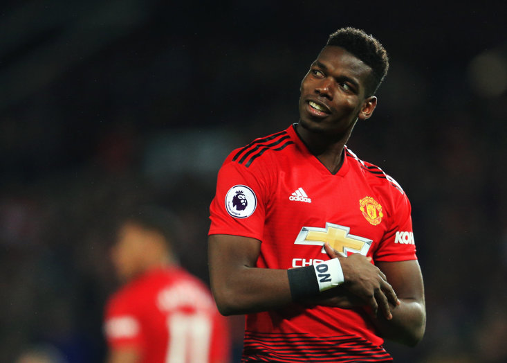

I used play soccer when I was younger for Tramore Athletic Football Club but when I was in secondary school I gave it up. I usually played striker but I was a centre back before that. I've supported Manchester United my whole life and try to watch as many of their games as I can, which is often made difficult since I don't have the channels.

I used play rugby but only for a couple of months because I found I didn't enjoy playing it. I still watch rugby when Ireland play and the odd time when Munster play. I went to the six nations match Ireland vs Italy in the Aviva Stadium in 2016 when Ireland thrashed Italy 58-15.
I used do athletics with Leevale Running Club, I did mostly running, long distance and sprints. I also enjoy watching Athletics during a big event such as the Olympics because it's unbelievable to watch how fast and durable some of the athletes are at the top level.